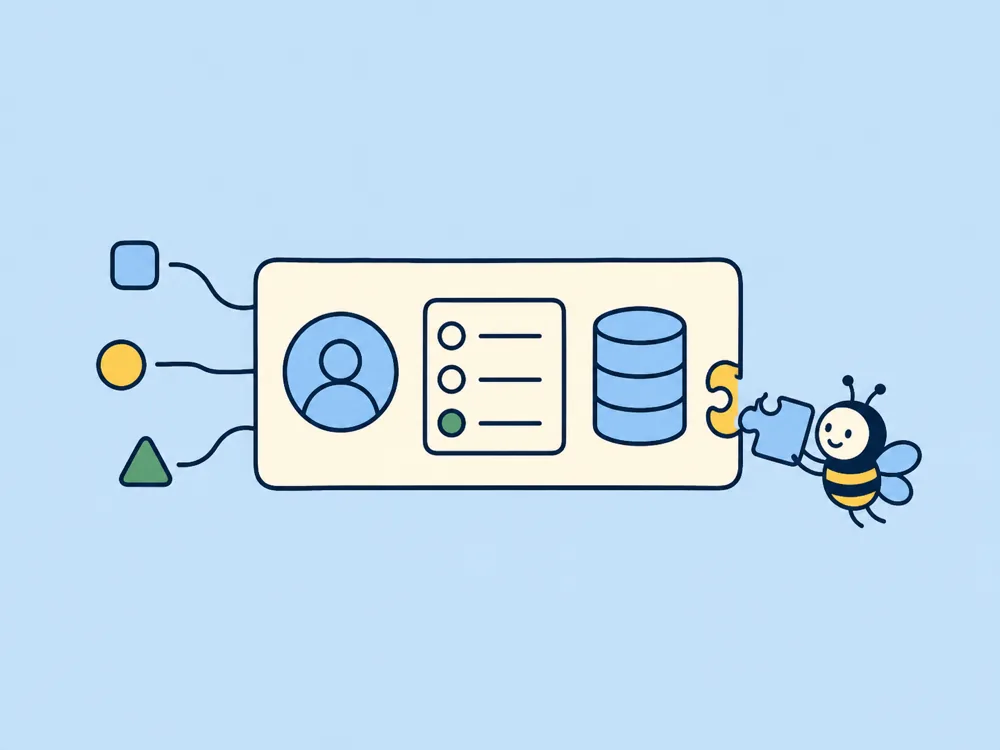

CRM og kundebilde
Samle kontaktinformasjon, historikk, status og neste steg i én oversikt.
Systemer
Vi bygger oversikter, interne verktøy og kundeportaler når standardløsningen skaper flere omveier enn den fjerner.

Når standard ikke passer
Noen bedrifter trenger først og fremst å konfigurere et eksisterende system bedre. Andre har en arbeidsprosess som krever et mer tilpasset verktøy. Vi undersøker forskjellen før noe bygges.
Målet er ikke flest mulig funksjoner. Målet er at riktig person ser riktig informasjon, forstår hva som må gjøres og kan gjennomføre oppgaven uten unødvendige omveier.
Dette kan vi bygge
Samle kontaktinformasjon, historikk, status og neste steg i én oversikt.
Forenkle registrering, behandling og oppfølging av bedriftens egne prosesser.
Gi kunder tilgang til relevant informasjon og handlinger på et avgrenset sted.
Vis nøkkelinformasjon og status uten å lete i flere kilder.
Slik starter vi
Vi kartlegger hvem som gjør hva, hvilken informasjon de trenger og hvor arbeidet stopper.
Vi avgrenser den viktigste flyten og lager en løsning som kan testes tidlig.
Nye behov vurderes etter at kjernen er forstått og prøvd i praksis.
Vanlige spørsmål
Nei. Vi vurderer eksisterende plattformer, integrasjoner og tilpasninger før egen utvikling anbefales.
Ofte, men det avhenger av hvilke integrasjoner og tilgangsmuligheter de aktuelle verktøyene tilbyr.
Vi avgrenser første versjon rundt én viktig arbeidsflyt og prioriterer nye funksjoner etter reelt behov.
Passer verktøyet måten dere jobber på?